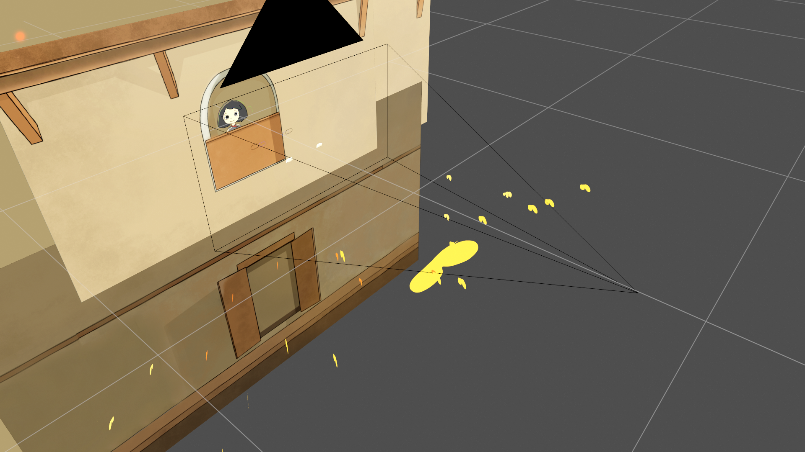
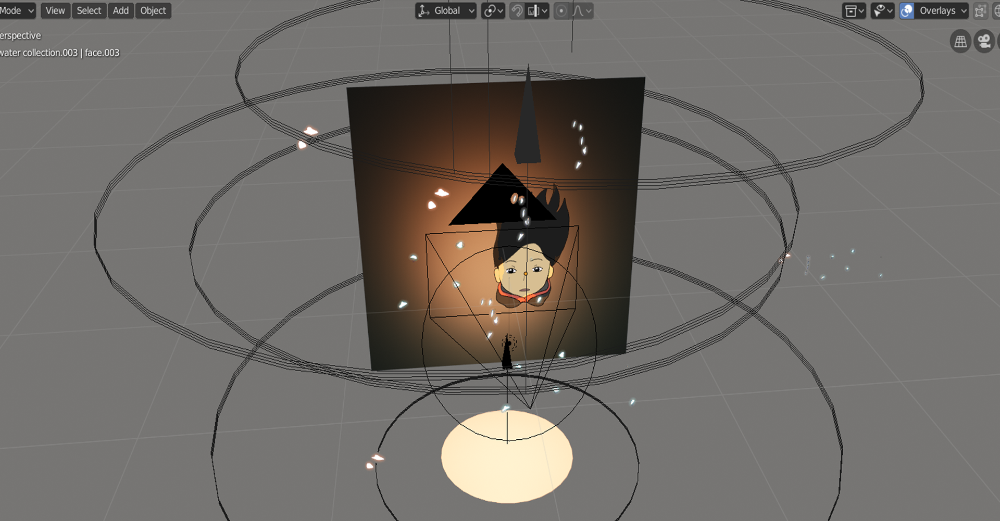

Selection
Project
Year
We are here fest
Animation
2019
Chagu Bakha is an animated short film about an ancient folklore about a Diety in the Newar culture in Nepal. My hope is that digital storytelling can reconnect young people from my ethnic group, the Newars, with our cultural identity. I explore digital storytelling with the memories of my hometown and my childhood within the Newari culture in Kathmandu.

I am from a small ethnic group in Nepal called Newars from
Kathmandu. Chagu Bakha means One Story in Newari Language.
Scholars have compared Newar culture to ancient Greece and
Rome in its power and complexity. But that culture is
eroding and in danger of being lost. Even the Newar
language is now endangered. The younger Newars are
becoming disconnected from the stories that pass on their
religious, cultural and social identity. Those are the
stories that tell you who you are. A story is a living
thing though, and for a story to stay alive, it has to be
retold in new ways.
The animation is made entirely in Blender 2.8 with grease
pencil and post production done in Adobe After Effects and
Adobe Premiere.
